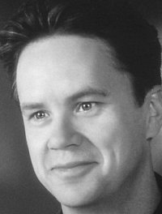
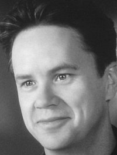

Vykoupení z věznice ShawshankTim Robbins
Forrest Gump Tom Hanks
Tom Hanks
Tom HanksZelená míle Tom Hanks
Tom Hanks
Tom HanksSedm Brad Pitt
Brad Pitt
Brad PittPřelet nad kukaččím hnízdem Jack Nicholson
Jack Nicholson
Jack Nicholson| Poradie | Názov filmu | Rok vydania | Hodnotenie v percentách |
|---|---|---|---|
| 1. | Vykoupení z věznice ShawshankTim Robbins |
1994 | 95,3% |
| 2. | Forrest Gump Tom Hanks |
1994 | 94,5% |
| 3. | Zelená míle Tom Hanks |
1999 | 92,9% |
| 4. | Sedm Brad Pitt |
1995 | 92,4% |
| 5. | Přelet nad kukaččím hnízdem Jack Nicholson |
1975 | 92.5% |
| 6. | Schindlerův seznam | 1993 | 92,3% |
| 7. | Kmotr | 1972 | 91,8% |
| 8. | Dvanáct rozhněvaných mužů | 1957 | 91,4% | 9. | Nedotknutelní | 2011 | 91,3% | 10. | Pelíšky | 1999 | 91,2% |
| 11. | Terminátor 2: Den zúčtování | 1991 | 90,9% |
| 12. | Pulp Fiction: Historky z podsvětí | 1994 | 90,7% |
| 13. | Kmotr II | 1974 | 90.8% |
| 14. | Pán prstenů: Společenstvo Prstenu | 2001 | 90.6% |
| 15. | Pán prstenů: Návrat krále | 2003 | 90,5% |
| 16. | Mlčení jehňátek | 1991 | 90,5% |
| 17. | Tenkrát na Západě | 1968 | 90,5% |
| 18. | Temný rytíř | 2008 | 90,4% | 19. | Gran Torino | 2008 | 90,3% | 20. | Matrix | 1999 | 90,2% |

Dráma z prostredia americkej väznice z prelomu päťdesiatych a šesťdesiatych rokov minulého storočia bola natočená podľa predlohy Stephena Kinga a je považovaná za jeden z najlepších filmov všetkých čias. Bol nominovaný na sedem Oscarov a fanúšikovia si k nemu nakoniec svoju cestu našli.
Celý príbeh sa začína rokom 1947, kedy pred súdom stoja Andy Dufresne (Tim Robbins), ktorý sa živil ako finančník so špecializáciou na dane, ale je obvinený z vraždy svojej ženy a jej milenca. Hoci je nevinný, aj tak ho odsúdia a čakajú ho tak vlastne dva doživotné tresty vo väznici v Shawshank v štáte Maine. Andy si spočiatku musí odtrpieť krutú šikanu, fyzické i sexuálne násilie. Po čase sa však spriatelí s Redom (Morgan Freeman) a ďalšími väzňami (vrátane Brooksa Hatlena hraného Jamesom Whitmoreom) a začne si na tvrdý život zvykať. Po nejakom čase sa mu začnú jeho vedomosti o daniach hodiť. Čírou náhodou zavedie reč s dozorcami a než sa nadeje, robí účtovníctvo celej väznici, vrátane jej riaditeľa Sama Nortona (Bob Gunton), ktorému však zároveň pomáha prať špinavé peniaze.Ďalšou udalosťou, ktorá zasiahne Andymu do života, je príchod nového väzňa Tommyho (Gil Bellows). Ten tvrdí, že má dôkazy o Andyho nevinne a môže mu pomôcť v obnovení procesu. Keď sa to ale dozvie riaditeľ Norton, Andyho zavrie na mesiac na samotku a Tommyho nechá zabiť, pretože nechce prísť o svoje príjmy z prania peňazí.
Andy sa ale nikdy nevzdal myšlienky, že sa dostane na slobodu. Bez toho, aby to ktokoľvek tušil, kope si roky svojim geologickým kladivkom únikovú cestu. A jedného dňa sa mu uniknúť naozaj podarí. V banke si potom vyzdvihne Nortonove peniaze získané nelegálnym spôsobom a uteká do Mexika. Ešte než odíde, pošle do novín informácie o praní peňazí v miestnej väznici. Spravodlivosti však nemôže byť učinené za dosť, lebo Norton sa po zverejnení článku obesí. Neskôr je tiež podmienečne prepustený aj Red, ktorý sa po rokoch za mrežami cíti bezradne, podobne ako kedysi Brooks, ale nakoniec sa rozhodne, že sa vydá za Andym do Mexika.
Tento dramatický a napriek tomu aj dojemný príbeh je ohromujúcim rozprávaním o ľudskej krutosti, ale aj odvahe, vytrvalosti a viere v nádej. Film je strhujúci nielen svojím posolstvom, ale aj vďaka skvelým hereckým výkonom. Aj keď ho v roku jeho uvedenia zatienili iné filmy, dnes je to naozaj film, ktorý patrí na pomyselný filmový Olymp.
Prevzaté zo stránky: https://www.csfd.cz Domovská stránka